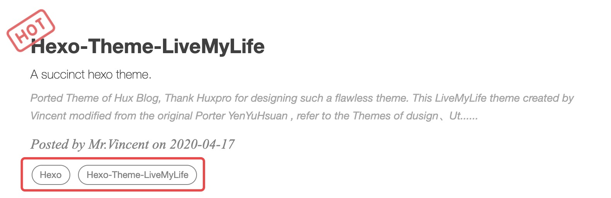
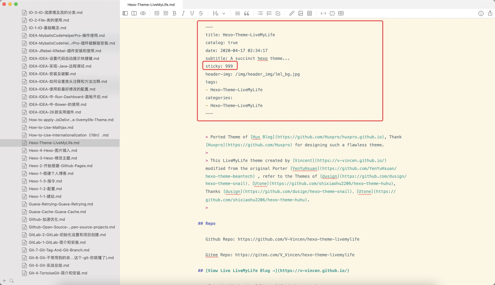

Ported Theme of Hux Blog, Thank Huxpro for designing such a flawless theme.
This LiveMyLife theme created by Vincent modified from the original Porter YenYuHsuan , refer to the Themes of dusign、Utone, Thanks dusign、Utone.
Repo
Github Repo: https://github.com/V-Vincen/hexo-theme-livemylife
Gitee Repo: https://gitee.com/V_Vincen/hexo-theme-livemylife
View Live LiveMyLife Blog →

Quick Start
I publish the whole project for your convenience, so you can just follow the instruction down below, then you can easily customiz your own blog!
Let’s begin!!!
Install Node.js and Git
1 | For Mac |
Windows: Download & install Node.js. -> Node.js
Windows: Download & install Git. -> Git
Install Hexo
1 | npm install -g hexo-cli |
What is Hexo?
Hexo is a fast, simple and powerful blog framework. You write posts in Markdown (or other markup languages) and Hexo generates static files with a beautiful theme in seconds.
Setup your blog
1 | hexo init blog |
More Commands -> Hexo Commands
Theme Usage
Init
1 | cd bolg |
Set Theme
Modify the value of theme: in _config.yml
1 | # Extensions |
Start the Server
1 | hexo generate # or hexo g |
Starts a local server. By default, this is at http://localhost:4000/.
More Commands -> Hexo Commands
Configuration
Modify _config.yml file with your own info, Especially the section:
Site
Replace the following information with your own.
1 | # Site |
CDN Settings
JsDelivr is A free CDN for Open Source fast、reliable and automated. If Github Pages deploy，you can config CDN settings. The images of the Hexo-theme-livemylife has added JsDelivr CDN Setting. How to use Jsdelivr? -> Docs：免费 CDN 提速 Github 静态资源访问
1 | # CDN Setting |
Site Settings
Put customized pictures in img directory.
1 | # Site settings |
Favicon Settings
1 | favicon: img/avatar/favicon.jpg |
Signature Settings
Copy your signature image to <root>/img/signature and modify the _config.yml.
1 | signature: true # show signature |
How to create signature -> Free Online Signature
Wave Settings
1 | # Wave settings |
Example:

SNS Settings
If you don’t want to display it, you can delete it directly.
1 | # SNS settings |
Sidebar Settings
Copy your avatar image to <root>/img/avatar and modify the _config.yml:
1 | sidebar: true # whether or not using Sidebar. |
Comment Settings
Hexo-Theme-LiveMyLife temporarily supports three Comments. I use gitalk comment system.
Gitalk
Gitalk is a modern comment component based on GitHub Issue and Preact. See Gitalk for detailed configuration method.
1 | # Gitalk Settings |
Gitment
Gitment is a comment system based on GitHub Issues, which can be used in the frontend without any server-side implementation. See Gitment for detailed configuration method.
1 | ## Gitment Settings |
Disqus
If you want use Disqus, you must have a circumvention (proxy, clime over the firewall) technology.
1 | # Disqus settings |
Analytics Settings
How to config analytics? -> Docs：Analytics and Sitemap Settings
1 | # Analytics settings |
Sitemap Settings
How to config sitemap? -> Docs：Analytics and Sitemap Settings
1 | # Google sitemap |
Go to top icon Setup
My icon is using point, you can change to your own icon at sourcre/css/images.
Post tag
You can decide to show post tags or not.
1 | home_posts_tag: true |
Example:

Markdown render
My markdown render engine plugin is hexo-renderer-markdown-it.
1 | # Markdown-it config |
Anchorjs Settings
And if you want to change the header anchor ‘❡’, you can go to layout/_partial/anchorjs.ejs to change it. How to use anchorjs, see AnchorJS for detailed examples.
1 | # Anchorjs Settings |
1 | async("//cdn.bootcss.com/anchor-js/1.1.1/anchor.min.js",function(){ |
Article Top
1 | # article top |
Hexo-theme-livemylife has added the article top function, just add top: number configuration to your markdown notes, articles are sorted by this number.
Example:

WordCount Settings
A Word Count Plugin for Hexo. See WordCount for detailed configuration method.
1 | # Dependencies: https://github.com/willin/hexo-wordcount |
Busuanzi Settings
Busuanzi is a website traffic statistics plugin. How to use Busuanzi, see Busuanzi for detailed examples.
1 | ## Dependencies: https://busuanzi.ibruce.info/ |
Top scroll progress
1 | # top scroll progress |
Tip
1 | tip: |
Social Share Post
1 | #Docs: https://github.com/overtrue/share.js |
Viewer Config
Viewer is a simple jQuery image viewing plugin. Let us first look at a demo. See Viewer for detailed configuration. If you want to modify the options of Viewer, you can go to sourcre/js/viewer/pic-viewer.js to change it.
1 | # Viewer config |
Theme Color Config
Hexo-Theme-LiveMyLife temporarily supports two themes color.
1 | themecolor: true |
Light theme preview：
Dark theme preview：
Search Settings
1 | # Dependencies: https://github.com/V-Vincen/hexo-generator-zip-search |
Gitter
Gitter is a chat and network platform that helps manage, develop and connect communities through messages, content and discovery. See Gitter for detailed configuration method.
1 | ## Docs:https://gitter.im/?utm_source=left-menu-logo |
Deployment
Replace to your own repo!
1 | deploy: |
Hexo Basics
Some hexo command:
1 | hexo new post "<post name>" # you can change post to another layout if you want |
Have fun ^_^
Please Star this Project if you like it! Follow would also be appreciated! Peace!
如果您喜欢此博客或发现它对您有用，则欢迎对此发表评论。 也欢迎您共享此博客，以便更多人可以参与。 如果博客中使用的图像侵犯了您的版权，请与作者联系以将其删除。 谢谢 ！